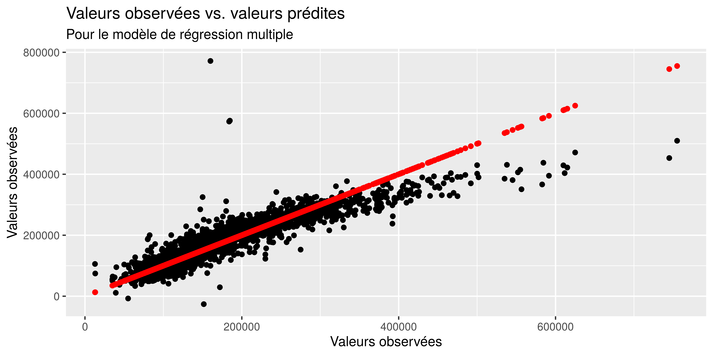
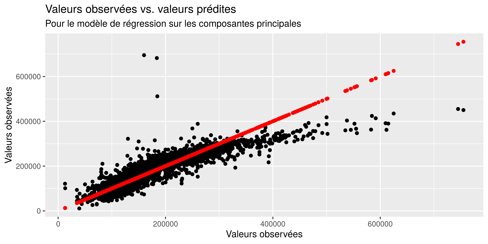
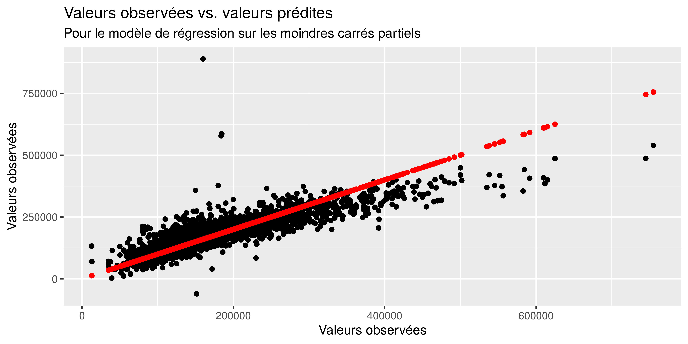

7 Comparaison des performances des différentes méthodes d’estimation
7.1 Performances prédictives du modèle de régression multiple
Nous pouvons représenter la qualité de l’ajustement en construisant pour chacun des modèle un nuage de points des valeurs observées et des valeurs prédites.
pred_mod <- predict(mod, base_export)
y <- base_export$Sale_Price
ggplot() +
geom_point(aes (x = y, y = pred_mod)) +
geom_point(aes(x = y, y = y), color = "red") +
labs( title = "Valeurs observées vs. valeurs prédites",
x = "Valeurs observées", y = "Valeurs observées",
subtitle = "Pour le modèle de régression multiple")
Nous voyons que le modèle a tendance à sous évaluer la valeur des maisons. En rouge c’est à quoi ressemblerait le nuage de point sur l’ajustement était parfait.
Le prix de certaines maisons semble être aberrant, c’est le cas pour les maisons de plus de 500.000 dollars.
Nous pouvons quantifier la différence entre les valeurs prédites et les valeurs observées en calculant la racine carrée des distances aux carrées. C’est le critère du Root Mean Square Error (RMSE).
[1] 35861.907Le RMSE pour ce modèle est de 35861, ce qui signifie qu’en moyenne les valeurs prédites dévient de la valeur observée de 35861 dollars en valeur absolue.
7.2 Performances prédictives du modèle de régression sur les composantes principales
pred_mod <- predict(mod_pc, coord_pc)
y <- base_export$Sale_Price
ggplot() +
geom_point(aes (x = y, y = pred_mod)) +
geom_point(aes(x = y, y = y), color = "red") +
labs( title = "Valeurs observées vs. valeurs prédites",
x = "Valeurs observées", y = "Valeurs observées",
subtitle = "Pour le modèle de régression sur les composantes principales")
[1] 39223.52Le RMSE de ce modèle de régression sur les composantes principales est de 39223, soit 3361 de plus que le modèle de régression multiple.
7.3 Performances prédictives du modèle sur les moindres carrés partiels
pred_mod <- predict(model.plsr, base_export) %>%
matrix(ncol = 5)
y <- base_export$Sale_Price
ggplot() +
geom_point(aes (x = y, y = pred_mod[, 5])) +
geom_point(aes(x = y, y = y), color = "red") +
labs( title = "Valeurs observées vs. valeurs prédites",
x = "Valeurs observées", y = "Valeurs observées",
subtitle = "Pour le modèle de régression sur les moindres carrés partiels")
(Intercept) 1 comps 2 comps 3 comps 4 comps 5 comps
79873 76600 47852 44587 43508 42095 Les valeurs affichées sont les RMSE pour chaque composante supplémentaire retenue dans le modèle. Pour les 5 composantes que nous avons retenues dans le modèle des moindres carrés partiels, le RMSE est de plus de 42000.